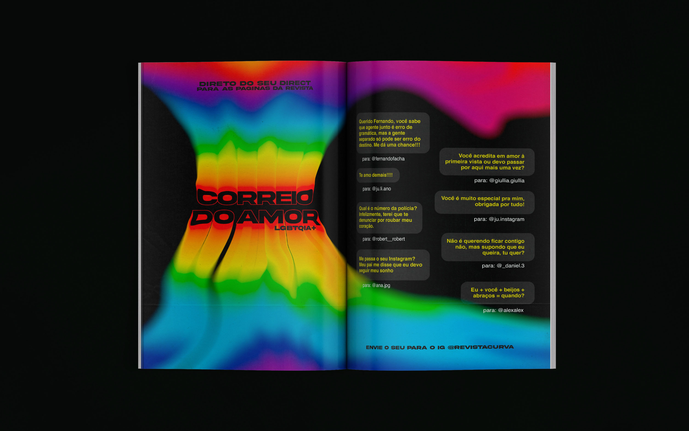

Apaixonada por ilustração desde muito cedo, todos os meus projetos sempre começam no lápis e papel. Às vezes gosto de fundir o que é feito manualmente com o projeto digital. Não posso negar que esse para mim é o melhor dos mundos. Sempre gostei muito de conversar, conhecer detalhes das pessoas e de seus gostos. E essa é a base de um outro passo importantíssimo para mim quando começo alguma arte: a escuta. Ouvir, rascunhar, rascunhar e rascunhar são a receita perfeita para um bom projeto. Espero que gostem dos que estão por vir! Um prazer recebê-los por aqui!
Sobre mim
Meus Projetos

Revista Curva
A revista Curva surge com o objetivo de mostrar ao mundo uma cultura outsider, disruptiva, com temas considerados TABUS na sociedade. As publicações contarão com entrevistas e curiosidades, embasadas por uma escrita cheia de autenticidade, irreverência e senso de humanidade, com o objetivo de informar e trazer uma atmosfera de pertencimento para quem se posiciona "fora da caixa". É uma peça editorial direcionada para todes cujo comportamento diverge da maioria, de espírito jovem e atitude destemida.

Revista Curva II
A revista Curva surge com o objetivo de mostrar ao mundo uma cultura outsider, disruptiva, com temas considerados TABUS na sociedade. As publicações contarão com entrevistas e curiosidades, embasadas por uma escrita cheia de autenticidade, irreverência e senso de humanidade, com o objetivo de informar e trazer uma atmosfera de pertencimento para quem se posiciona "fora da caixa". É uma peça editorial direcionada para todes cujo comportamento diverge da maioria, de espírito jovem e atitude destemida.